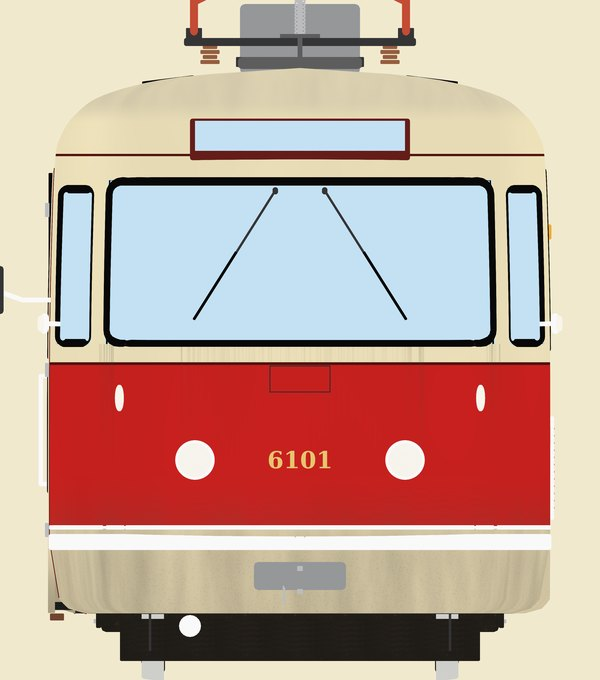
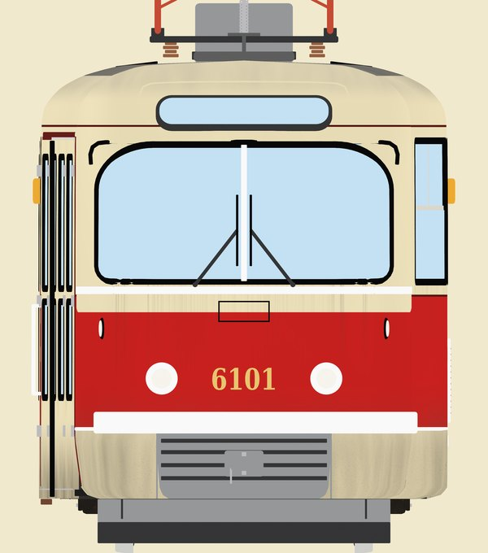

Every feature measured the same way on the drawing and on a flat-colour render of the model, in millimetres from the top of rail and from the centreline.


Drawing scale from its own dimensions: 2,500 mm body width and 1,435 mm gauge both give 3.05 mm per pixel; the rail top is the end of the 3,028 mm dimension; the centreline is the middle of the body sides. The model is rendered orthographically at 1 mm per pixel with flat colours. Both are reduced to the same colour classes, and edges of thin outlined items (beading, bumper, flap) are taken at the centre of their outline strokes. Deviation = model − drawing.
| Feature | Drawing | Before | Dev. | After | Dev. |
|---|---|---|---|---|---|
| Windscreen | |||||
| windscreen left edge The drawing draws the windscreen off-centre (−831 / +945 mm). The model is symmetric with the same width. | -831 | -946 | -115 | -894 | -63 |
| windscreen right edge See left edge. | 945 | 945 | 0 | 894 | -51 |
| windscreen width | 1 777 | 1 891 | 114 | 1 788 | 11 |
| windscreen top at zv -0.45 | 2 491 | 2 472 | -19 | 2 491 | 0 |
| windscreen bottom at zv -0.45 | 1 682 | 1 700 | 18 | 1 684 | 2 |
| windscreen top at zv +0.45 | 2 491 | 2 472 | -19 | 2 491 | 0 |
| windscreen bottom at zv +0.45 | 1 685 | 1 700 | 15 | 1 684 | -1 |
| windscreen width 20 mm below top | 1 358 | 1 858 | 500 | 1 368 | 10 |
| windscreen width 50 mm below top | 1 496 | 1 874 | 378 | 1 510 | 14 |
| windscreen width 100 mm below top Corner curve, 17 mm. | 1 633 | 1 876 | 243 | 1 650 | 17 |
| windscreen width 20 mm above bottom | 1 746 | 1 878 | 132 | 1 736 | -10 |
| windscreen width 50 mm above bottom | 1 767 | 1 904 | 137 | 1 780 | 13 |
| Route sign | |||||
| sign left | -544 | -550 | -6 | -535 | 9 |
| sign right | 533 | 550 | 17 | 535 | 2 |
| sign top | 2 821 | 2 807 | -14 | 2 815 | -6 |
| sign bottom | 2 592 | 2 602 | 10 | 2 596 | 4 |
| sign width | 1 078 | 1 100 | 22 | 1 070 | -8 |
| sign height | 229 | 205 | -24 | 219 | -10 |
| Red panel, beading and bumper | |||||
| red top at zv -0.30 | 1 480 | 1 575 | 95 | 1 480 | 0 |
| red bottom at zv -0.30 | 855 | 774 | -81 | 868 | 13 |
| red top at zv +0.30 | 1 480 | 1 575 | 95 | 1 480 | 0 |
| red bottom at zv +0.30 | 858 | 774 | -84 | 868 | 10 |
| red top at zv -0.70 | 1 477 | 1 575 | 98 | 1 480 | 3 |
| red bottom at zv -0.70 Within the outline stroke between red and bumper. | 852 | 774 | -78 | 868 | 16 |
| red top at zv +0.70 | 1 480 | 1 575 | 95 | 1 480 | 0 |
| red bottom at zv +0.70 | 861 | 774 | -87 | 868 | 7 |
| bumper left end | -926 | – | – | -925 | 1 |
| bumper right end On this side the drawing runs the bumper on as the side rub strip, lower down. The side strip is outside this task and unchanged. | 1 229 | – | – | 1 067 | -162 |
| beading top (stroke centre) at zv -0.40 | 1 635 | – | – | 1 638 | 3 |
| beading bottom (stroke centre) at zv -0.40 | 1 586 | – | – | 1 592 | 6 |
| bumper top (stroke centre) at zv -0.40 | 867 | 774 | -93 | 868 | 1 |
| bumper bottom (stroke centre) at zv -0.40 | 733 | 698 | -35 | 734 | 1 |
| beading top (stroke centre) at zv +0.40 | 1 638 | – | – | 1 638 | 0 |
| beading bottom (stroke centre) at zv +0.40 | 1 589 | – | – | 1 592 | 3 |
| bumper top (stroke centre) at zv +0.40 | 870 | 774 | -96 | 868 | -2 |
| bumper bottom (stroke centre) at zv +0.40 | 736 | 698 | -38 | 734 | -2 |
| Lamps | |||||
| headlight L outer width The drawing value includes its black outline, about 9 mm each side. | 217 | 198 | -19 | 198 | -19 |
| headlight L centre zv | -499 | -526 | -27 | -507 | -8 |
| headlight L centre y | 1 071 | 1 101 | 30 | 1 073 | 2 |
| headlight L lens diameter | 118 | 168 | 50 | 124 | 6 |
| headlight R outer width As left. | 214 | 198 | -16 | 198 | -16 |
| headlight R centre zv | 502 | 525 | 23 | 506 | 4 |
| headlight R centre y | 1 076 | 1 101 | 25 | 1 073 | -3 |
| headlight R lens diameter | 118 | 168 | 50 | 124 | 6 |
| position lamp L centre zv | -870 | -904 | -34 | -883 | -13 |
| position lamp L centre y | 1 374 | 1 410 | 36 | 1 381 | 7 |
| position lamp L height | 101 | 132 | 31 | 100 | -1 |
| position lamp R centre zv | 868 | 903 | 35 | 882 | 14 |
| position lamp R centre y | 1 387 | 1 411 | 24 | 1 381 | -6 |
| position lamp R height | 101 | 132 | 31 | 100 | -1 |
| indicator L centre zv | -1 291 | – | – | -1 276 | 15 |
| indicator L centre y | 2 217 | – | – | 2 226 | 9 |
| indicator R centre zv | 1 271 | 1 249 | -22 | 1 275 | 4 |
| indicator R centre y | 2 229 | 2 242 | 13 | 2 226 | -3 |
| Number and flap outline | |||||
| number digit height | 137 | 89 | -48 | 137 | 0 |
| number centre y | 1 068 | 1 102 | 34 | 1 071 | 3 |
| number width | 385 | 292 | -93 | 385 | 0 |
| plate outline top | 1 552 | – | – | 1 546 | -6 |
| plate outline bottom | 1 429 | – | – | 1 430 | 1 |
| plate outline left | -151 | – | – | -154 | -3 |
| plate outline right | 156 | – | – | 154 | -2 |
| Strips beside the face | |||||
| corner pillar L inner The pillar ends where the door starts; see outer. | -831 | -979 | -148 | -921 | -90 |
| corner pillar L outer The drawing shows the door leaves black. In the model they are cream with glass, so the cream run continues into the door. | -947 | -1 038 | -91 | -1 150 | -203 |
| corner pillar R inner Front view, plan and side view disagree by 4–6 cm on where the angled wall ends. The model takes 1.03 m. | 945 | 979 | 34 | 921 | -24 |
| corner pillar R outer As above. | 1 070 | 1 038 | -32 | 1 049 | -21 |
| cab window glass inner As above. | 1 070 | 1 048 | -22 | 1 055 | -15 |
| cab window glass outer As above. | 1 186 | 1 192 | 6 | 1 232 | 46 |
| Skirt lobes and guard plate | |||||
| lobe L inner edge | -520 | -200 | 320 | -524 | -4 |
| lobe R inner edge | 530 | 200 | -330 | 522 | -8 |
| lobe bottom at zv -0.70 | 342 | 306 | -36 | 334 | -8 |
| lobe bottom at zv +0.70 | 348 | 306 | -42 | 333 | -15 |
| guard plate top at zv -0.65 | 345 | 333 | -12 | 333 | -12 |
| guard plate bottom at zv -0.65 | 52 | 95 | 43 | 60 | 8 |
| guard plate top at zv +0.65 | 348 | 333 | -15 | 333 | -15 |
| guard plate bottom at zv +0.65 | 58 | 95 | 37 | 60 | 2 |
| guard plate left | -902 | -900 | 2 | -900 | 2 |
| guard plate right | 909 | 900 | -9 | 900 | -9 |
| Silhouette and roof | |||||
| body left at y 1.00 | -1 262 | -1 265 | -3 | -1 264 | -2 |
| body right at y 1.00 | 1 266 | 1 270 | 4 | 1 270 | 4 |
| body left at y 2.00 | -1 265 | -1 259 | 6 | -1 263 | 2 |
| body right at y 2.00 | 1 257 | 1 250 | -7 | 1 254 | -3 |
| body left at y 2.75 | -1 234 | -1 181 | 53 | -1 219 | 15 |
| body right at y 2.75 | 1 223 | 1 181 | -42 | 1 219 | -4 |
| body left at y 2.90 | -1 072 | -1 034 | 38 | -1 060 | 12 |
| body right at y 2.90 | 1 070 | 1 034 | -36 | 1 059 | -11 |
| body left at y 2.98 | -831 | -797 | 34 | -831 | 0 |
| body right at y 2.98 The drawing is asymmetric here (left 831 mm, right 854 mm). | 854 | 797 | -57 | 831 | -23 |